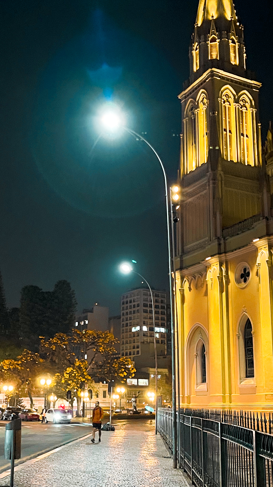
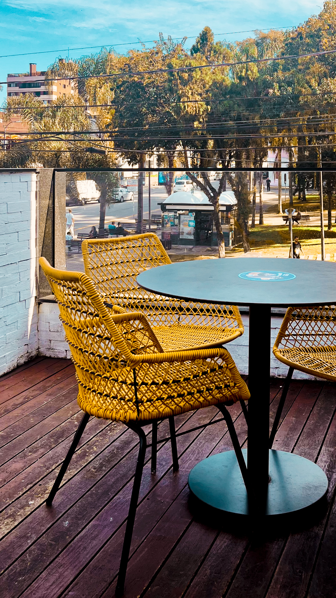
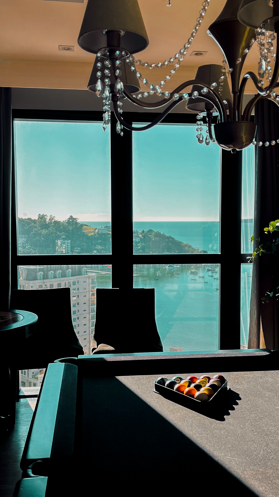
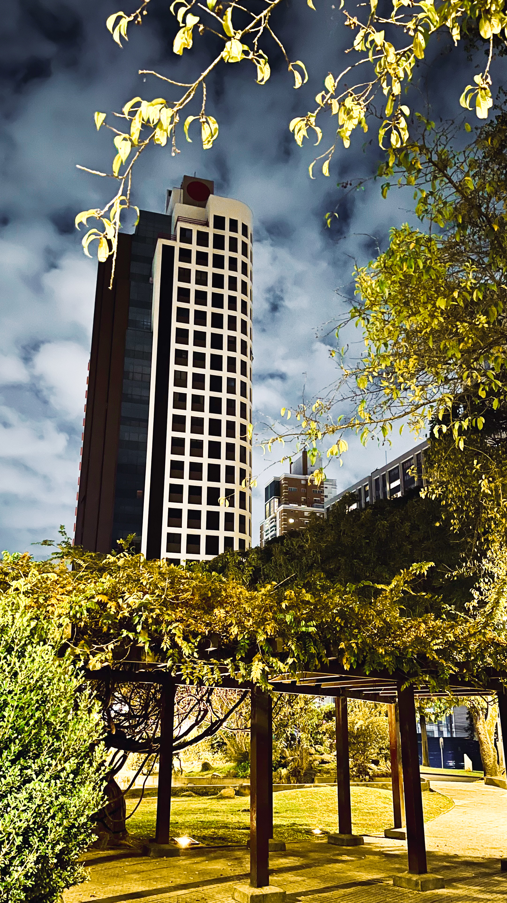
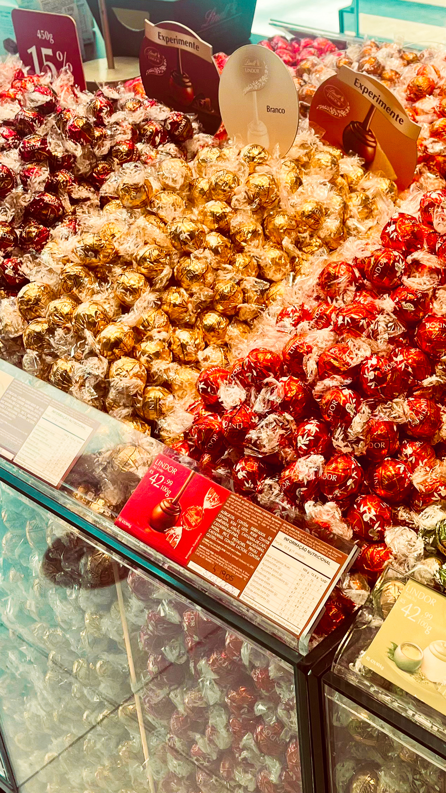
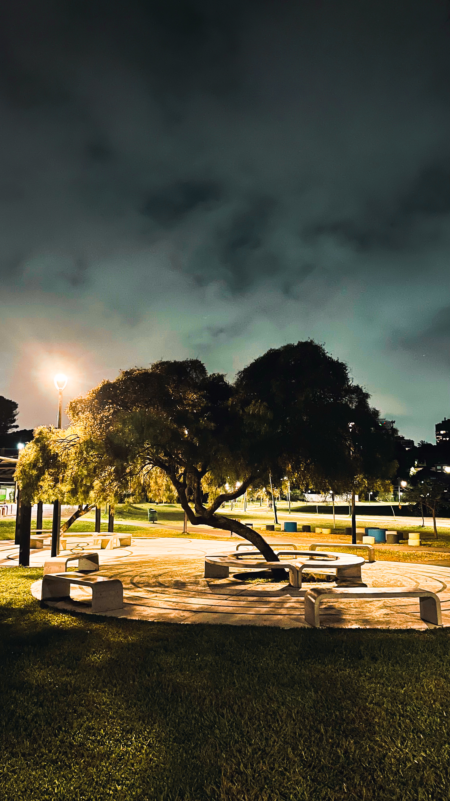
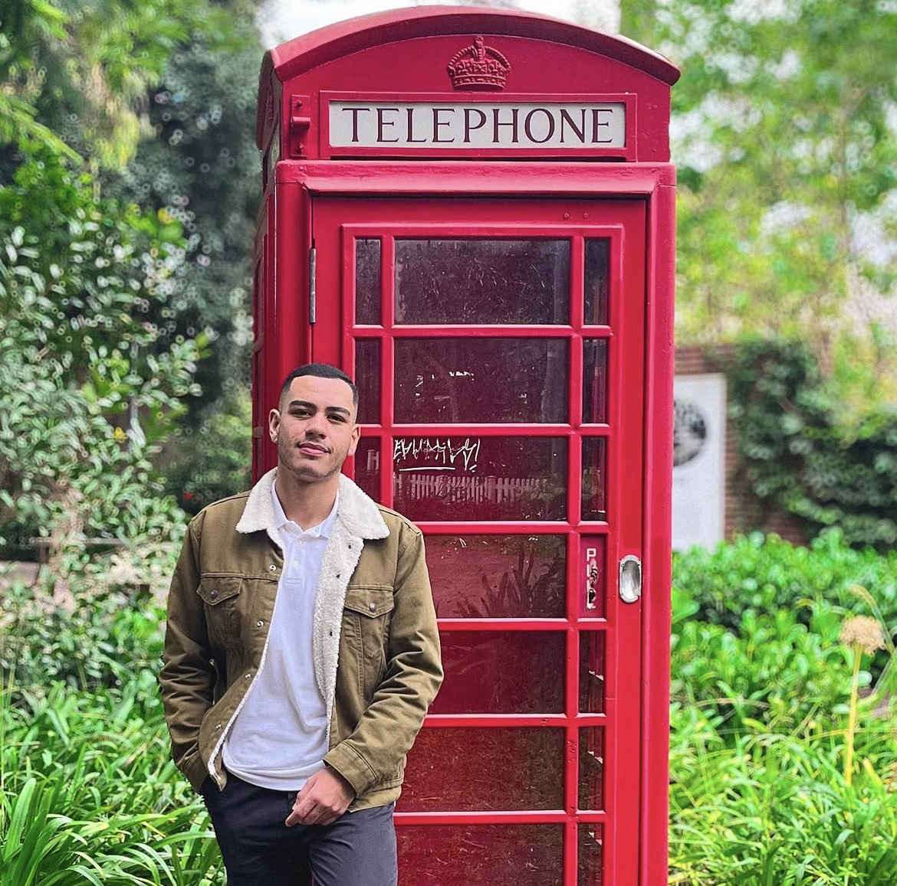

FOTOGRAFIA • FILMES • HISTÓRIAS
Um novo olhar
EXPLORE
↓
Um novo olhar
sobre cada história.
Fotografias e filmes que valorizam pessoas, marcas, negócios e momentos que merecem permanecer.
HISTÓRIAS ATRAVÉS DE IMAGENS
Portfólio
Cada trabalho nasce de um olhar atento à luz, aos detalhes e às histórias que existem em pessoas, lugares e marcas.





INSTANTES
Alguns momentos passam em segundos.
Mas uma imagem pode fazer com que aquele instante continue existindo por muitos anos.
SUA HISTÓRIA PODE SER A PRÓXIMA
Imagens que não apenas mostram, mas fazem sentir.
Pessoas, empresas, lugares e momentos carregam histórias. O objetivo é transformá-las em fotografias e filmes autênticos, capazes de continuar fazendo sentido com o tempo.
Quero contar minha história
01
POR TRÁS DAS LENTES
Muito prazer,
VAMOS CRIAR ALGO JUNTOS
→
Muito prazer,
eu sou Guilherme.
Especializado em fotografias e vídeos institucionais que valorizam pessoas, marcas e negócios.
Acredito que grandes fotografias não apenas registram um instante, mas preservam sentimentos, histórias e conexões.
Meu trabalho é unir paixão, sensibilidade e autenticidade para continuar fazendo sentido muitos anos depois.
Guilherme Kauê
Fotógrafo & Filmmaker • by.Guilhermefilms
POSSIBILIDADES
Serviços
Produções pensadas para valorizar histórias, pessoas, marcas e negócios através de fotografia e vídeo.
Fotografia
Ensaios, retratos e registros criativos em ambientes internos ou externos.
Vídeos
Produções audiovisuais para contar histórias, apresentar ideias e criar conexão com o público.
Institucional
Fotografias e vídeos que valorizam profissionais, equipes, empresas, marcas e negócios.
Marcas e produtos
Conteúdo visual para produtos, redes sociais, campanhas e materiais de divulgação.
IMAGENS TAMBÉM CONTAM HISTÓRIAS
O tempo muda tudo.
O tempo muda tudo.
Um bom registro faz permanecer.
VAMOS CRIAR ALGO?
Sua próxima história pode começar aqui.
Entre em contato para conversar sobre sua ideia, consultar disponibilidade ou solicitar um orçamento personalizado.